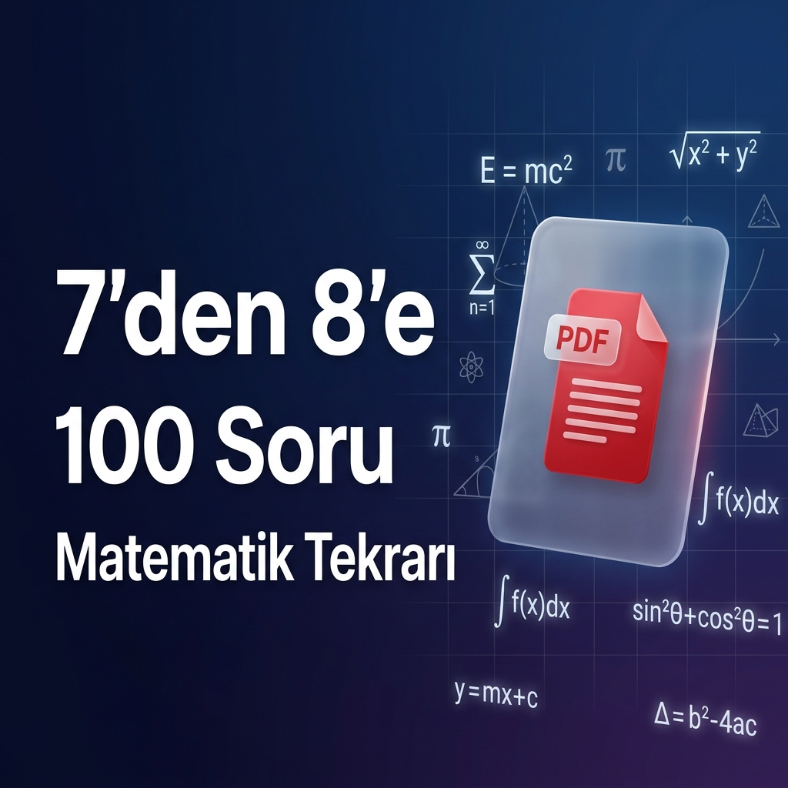
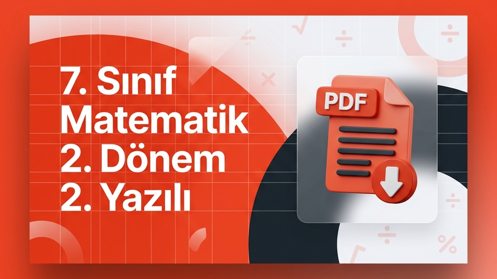
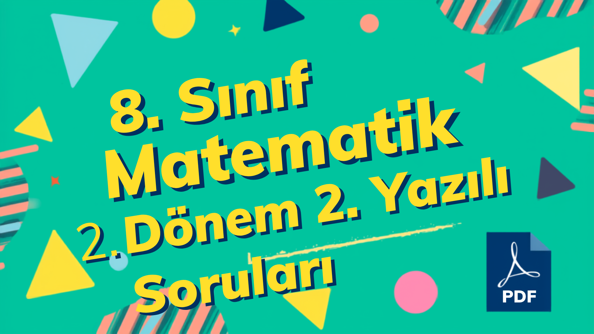

7’den 8’e geçen ve LGS’ye hazırlanan öğrenciler için özel olarak tasarlanmış, 4 ana üniteden oluşan 100 soruluk matematik tekrar kitapçığı ve PDF indirme bağlantısı.
LGS Matematik hazırlığında öğrencilerin en sık hata yaptığı soru tiplerinden birini ele alıyoruz. Çözümler, püf noktaları ve video çözümü.

Milli Eğitim Bakanlığı senaryolarına uygun olarak hazırlanan 7. Sınıf Matematik 2. Dönem 2. Yazılı ortak sınav soruları ve PDF indirme bağlantısı.

Milli Eğitim Bakanlığı senaryolarına uygun olarak hazırlanan 8. Sınıf Matematik 2. Dönem 2. Yazılı (Senaryo 1-2) soruları ve PDF indirme bağlantısı.